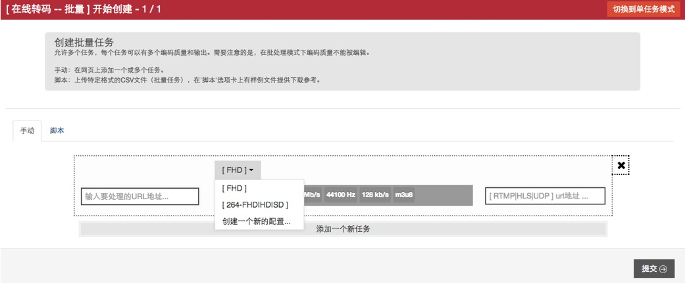
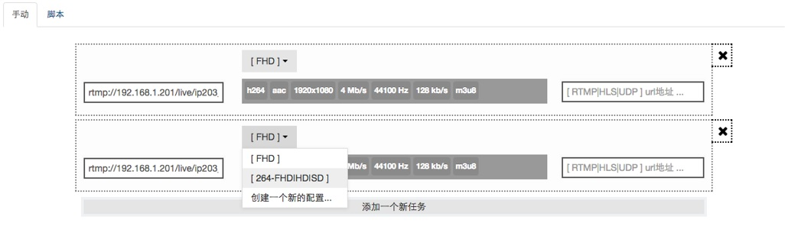
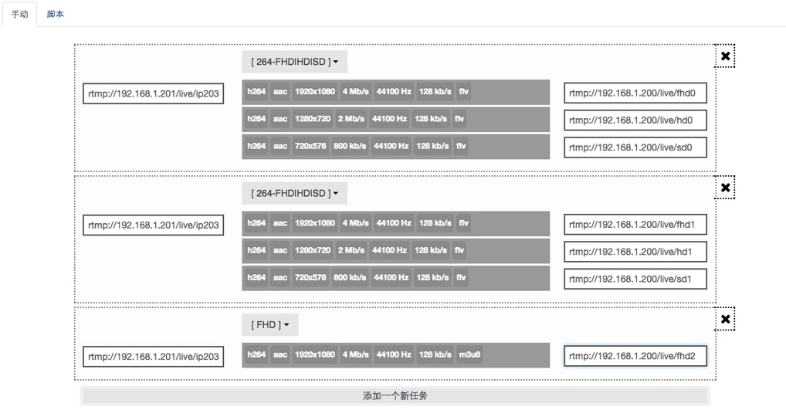
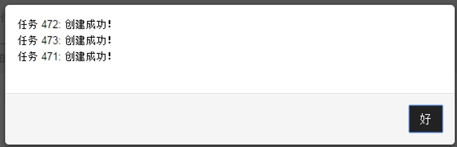
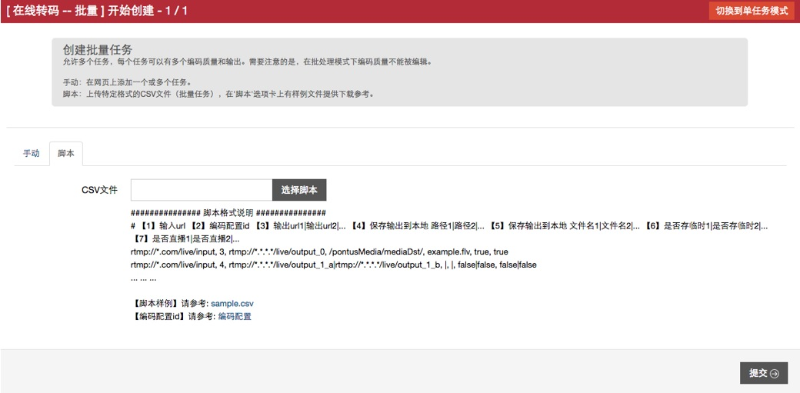
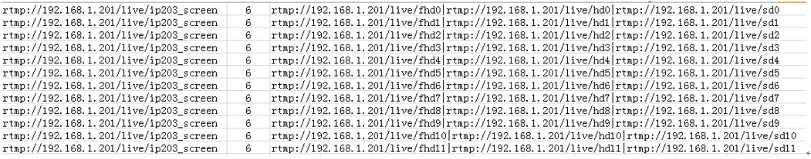
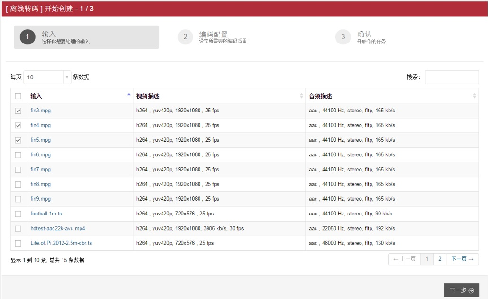

对于在线转码和离线转码均可批量创建转码任务。
1. 在线转码批量操作
在图2-2所示页面中点击页面右上角“切换到批量模式“按钮，便可进入在线批量转码任务创建页面，如图4-1所示。批量任务的创建有两种方法，手动添加和脚本添加。手动添加点击“添加一个新任务”，进入如图4-2所示批量添加在线转码任务页面，点击下拉选项框选择要处理的输入源所需的编码配置（详情操作参见后面任务编码配置相关章节），所有任务添加完成并选择好编码配置后进入图4-3所示页面。分别填写好输入地址和输出地址，如图4-4，点击 “提交”，提交所有配置完成的批量在线转码任务。提交成功页面会弹出图4-5提示框，点击“好”，页面自动跳转到“执行中的任务”页面，可点击查看正在转码的任务概览和详细情况。
图4-1 在线转码批量任务创建页面
 图4-2 批量添加在线转码任务页面
 图4-3. 批量在线转码参数配置页面
 图4-4. 批量任务确认提交页面
 图4-5.任务创建成功提示框
在任务创建页面图4-1中选择脚本，如图4-6所示，在选择脚本处选择需要导入的.CSV文件（可点击参考文件，下载查看.CSV文件的编写格式，如图4-7所示，“输入地址”、“编码配置的ID号”、“输出地址”。输出为多路的，输出地址使用“|”符号间隔。），点击“提交”，则可创建与CSV文件内容对应的批量任务。
 图4-6.创建页面脚本添加
 图4-7.CSV参考文件
2. 离线转码批量操作
批量创建离线转码任务只需在新建离线转码任务页面（图2-7）中，复选多项输入流，如图4-8所示，其后操作与单个离线转码任务相同。
 图4-8. 离线转码多输入源选取